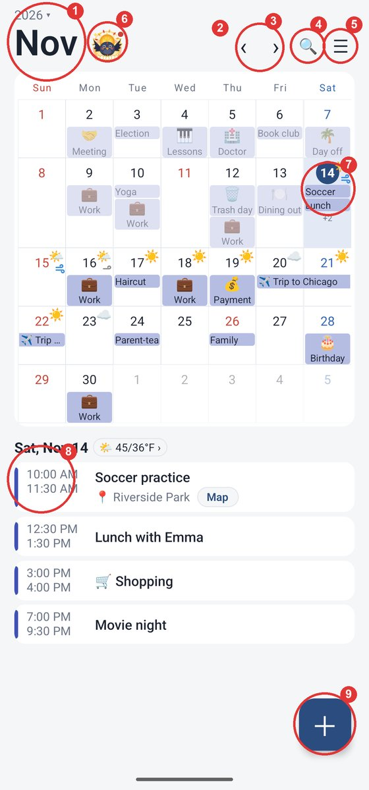
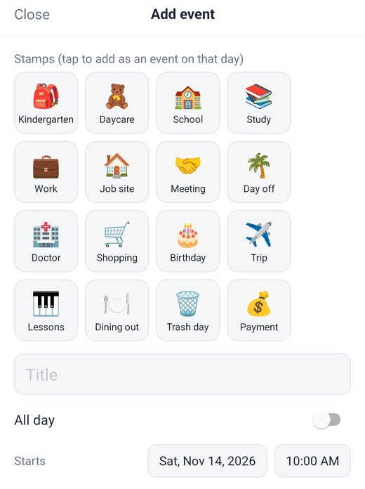
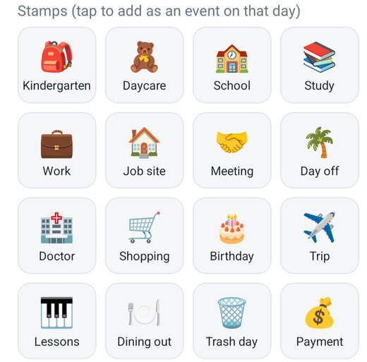
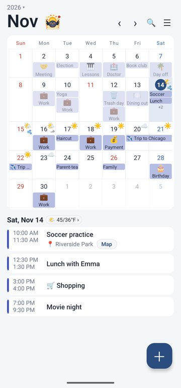
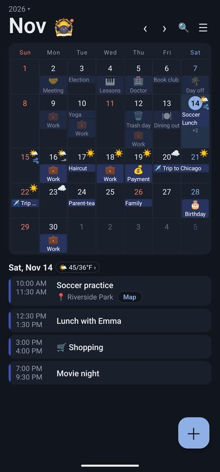
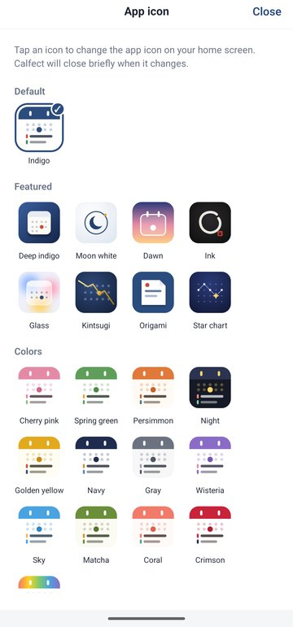
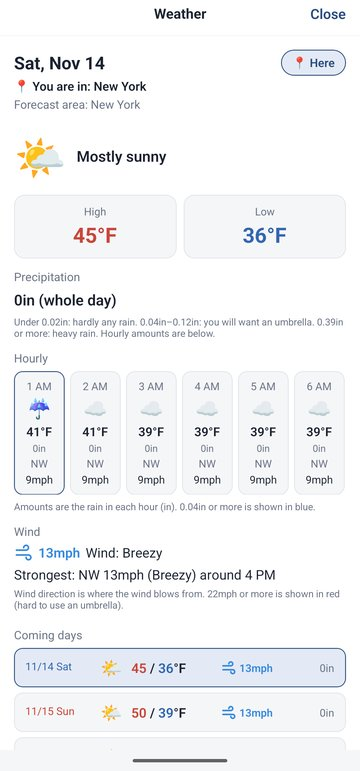
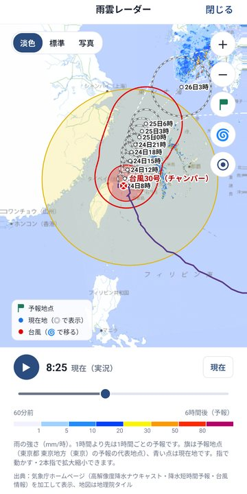
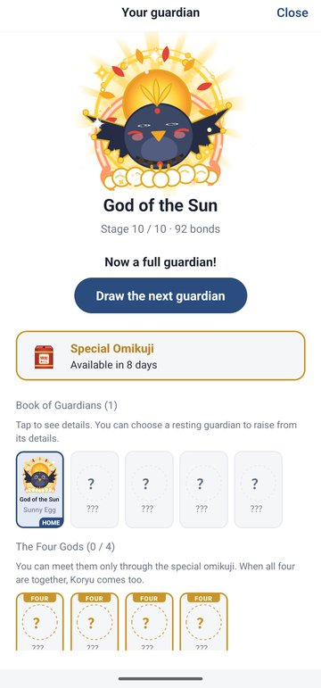
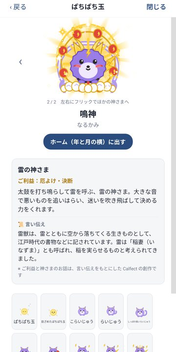

How to use Calfect
See your month and events at a glance, and add plans with one-tap stamps
User guide · Last updated: November 10, 2026 · 日本語
Calfect is a calendar app for iPhone, iPad and Android. It shows the events from the calendars already on your device (iCloud, Google, Outlook and more) in a month view with an event list, and lets you add and edit them. No sign-up is needed. Events are saved to your device's calendars, so you'll see the same events in your other calendar apps too.
- 🚀Getting started
- 👀The main screen
- 🗓️Day, week, month and year views
- ➕Adding events
- ✏️Editing, deleting and moving events
- 📋Copy, share and templates
- 🎒Stamps
- 📷Photos and maps
- ⚙️Settings
- ☀️Weather
- 🦊Raising a guardian
- 🔗Adding a calendar by URL
- 💾Backup and restore
- 👑Free plan and Calfect Premium
- 🆘Troubleshooting
- 💌Feedback and contact
1🚀Getting started
The first time you open Calfect, you'll be asked for access to your calendars. On iPhone, choose Allow Full Access; on Android, choose Allow. Without access, Calfect can't show your events.
To change this later:
- iPhoneThe Settings app →Apps→Calfect→Calendars
- AndroidDevice Settings→Apps→Calfect→Permissions→ set Calendar to Allow
To see events from Google Calendar or another service, add that account to your device first.
- iPhoneThe Settings app →Apps→Calendar→Calendar Accounts, then add the account
- AndroidDevice Settings→Accounts (on some phones "Passwords & accounts"), add your Google account, and turn on Calendar in that account's sync settings
2👀The main screen

| Where | What it does |
|---|---|
| 1Month and year (top left) | Tap to switch the view (Day, Week, Month, Year) or jump to another year and month. |
| 2Today | Takes you back to today. It appears at ② when another day or month is shown, and is hidden while today is selected. |
| 3‹ › | Previous / next month (in Day view: previous / next day; Week view: week; Year view: year). |
| 4🔍 (top right) | Search your events (see "Searching events" below). |
| 5☰ (top right) | Opens Settings. |
| 6Guardian next to the month | Tap to open your guardian's screen (section 11). Before you have a guardian, an omikuji box sits here. |
| 7Month grid | Tap a day to show its events in the list below. |
| 8Event list | Shows the selected day's events: all-day events first, then by start time. Tap an event to edit it. |
| 9＋ (bottom right) | Adds an event on the selected day. |
- Swipe the month view left or right to change months.
- Swipe the event list left or right to go to the previous or next day (the month view follows when you cross into another month).
- Pull down on the event list to reload your events.
- Above the event list you'll see the selected day's date, holiday and weather (and rokuyo, if turned on). Each can be turned off in Settings.
- When today is shown, the list scrolls automatically so the most recently finished event is at the top (you can turn this off in Settings).
- On an iPad or tablet in landscape, the month view and the event list sit side by side.
Searching events
Tap 🔍 at the top right to search your events by keyword.
- Type a word. Events with that word in the title, location or notes appear.
- Type several words separated by spaces to find events that contain all of them.
- Tap an event to open it. When you close it, you're back at your results (your search and results are kept).
- Tap Go to day next to an event to close the search and jump to that day in the calendar.
- Tap calendar names under the search box to search only those calendars (pick as many as you like). All calendars clears the filter. Your choice is remembered for next time.
- When the search box is empty, Recent searches (up to 10) are shown. Tap one to search again. Remove them one at a time with ✕, or all at once with Clear.
Results are split into Upcoming (soonest first) and Past (most recent first).
On the free plan, search covers 1 year back to 1 year ahead. With Calfect Premium, it covers 20 years back to 5 years ahead. Years closest to now load first, so results from further back or ahead may appear a moment later. Calendars hidden in Settings → Calendars are not searched.
3🗓️Day, week, month and year views
Tap the month and year at the top left, then choose Day, Week, Month or Year at the top. You can also pick a year and month on the same screen to jump there.
- Day view: one day's events, shown large. Swipe left or right for the previous or next day.
- Week view: a week's events, listed day by day. Swipe left or right for the previous or next week.
- Month view: the month calendar plus the selected day's event list.
- Year view: all 12 months of a year. Tap a month to open it in Month view. Swipe left or right for the previous or next year.
Calfect remembers the last view you used.
4➕Adding events

- Tap the day you want to add an event to.
- Tap ＋ at the bottom right. The keyboard opens so you can type the title right away.
- Enter a title, and if you like, set the time, location, repeat, alerts, calendar, event color, notes and photos.
- Tap Save. While you're typing, it's a round button just above the keyboard on the right; otherwise it's at the bottom right.
| Field | What it does |
|---|---|
| All day | Makes an event with no time. Set different start and end dates for a multi-day event; it shows as a connected bar in the month view. |
| Starts / Ends | Tap the date or time to change it. Moving the start moves the end too, keeping the same length. |
| Location | When filled in, a Map button appears in the event list. Tap Copy next to the field to copy the address and paste it into another app. |
| Repeat | Choose Daily, Weekly, Every 2 weeks, Monthly or Yearly. |
| Alerts | Choose any combination of: At time of event, 5, 10, 15 or 30 min before, 1 or 2 hours before, 1 or 2 days before, 1 week before. For all-day events: On the day 7:00 AM / 9:00 AM / 12:00 PM, Day before 9:00 AM / 6:00 PM, 2 days before 9:00 AM, 1 week before 9:00 AM (times follow your time format). Tap a selected alert again to remove it; tap None to clear them all. |
| Calendar | Choose which calendar (iCloud, Google, etc.) to save the event to. |
| Event color | Gives just this event its own color; the calendar's color stays the same. Choose Calendar color to go back. |
For important events, add two or more alerts (for example, the day before at 9:00 AM and on the day at 7:00 AM) so you don't miss them.
Event colors are used only inside Calfect. Other calendar apps and other devices show the calendar's color. All occurrences of a repeating event share one color. The preset colors are free; choosing colors you created yourself is a Calfect Premium feature.
If you'd rather not have the keyboard pop up when the screen opens (for example, to pick a template or stamp first), go to Settings →Defaults for new events and turn off Start typing the title right away.
Alerts arrive as notifications from your device's calendar. If you don't get them, check the following.
iPhoneThe Settings app → Apps → Calendar → Notifications is on.
AndroidFor events in Google or other online accounts, alerts come from the calendar app on your phone (Google Calendar, Samsung Calendar, etc.). Check that notifications are on in Settings → Apps → that calendar app. For events in calendars stored only on the device (such as a local account), alerts come from Calfect, which schedules the next 2 weeks of alerts each time you open it. Check Settings → Apps → Calfect → Notifications.
5✏️Editing, deleting and moving events
Tap an event in the list to open the editor. Make your changes and tap Save.
To delete, tap Delete event at the bottom of the editor, then Delete to confirm.
For a repeating event, choose This day only or This and all following.
You can also move an existing event to another calendar. Choose a different calendar under Calendar in the editor and tap Save. For a repeating event, this and all following occurrences are moved.
Events in read-only calendars (holiday calendars, calendars added by URL, etc.) can't be changed or deleted, but you can still add photos.
Press and hold to move or copy to another day
You can pick up an event from the list and drop it on another day.
- Press and hold the event in the list. It turns into a small tag that follows your finger.
- Without lifting your finger, drag it to the day you want in the month calendar. That day gets highlighted.
- Let go, then choose Move, Copy or Cancel.
In Day view, the month calendar slides in when you press and hold. In Month view, just drag to the calendar above. If the calendar is shrunk, it expands again when you drag the tag onto it.
| To do this | How |
|---|---|
| Move to another month | Hold the tag at the left or right edge of the screen to go to the previous or next month. Or, while holding the tag, swipe left or right with another finger (one month per swipe). |
| Cancel | Let go somewhere that isn't a date. The tag goes back where it was. |
Only the date changes; the time and length stay the same. Copies don't include the repeat setting or photos. Repeating events and events in read-only calendars can only be copied. When changing months with a second finger, swipe a little away from the finger holding the tag.
6📋Copy, share and templates
Use the Copy & share section in the event editor.
| Button | What it does |
|---|---|
| Copy | Switches to a new event with the same details. Adjust the date and save. The original stays as it is. |
| Copy to multiple days | A small calendar appears. Tap as many days as you like, then tap Copy. Each chosen day gets the event at the same time and length. |
| Share | Sends the title, date and time, location and notes as text to Messages, Mail, WhatsApp and other apps. |
| Copy as text | Copies the title, date and time, location and notes as text, ready to paste into another app. |
| Add to templates | Saves everything except the date (title, location, notes, time, length and alerts) as a template. |
Your templates appear on the add event screen. Tap one to fill in all its details on the selected day. To reorder (you can also drag with a long press; see "Reordering lists" in section 9) or remove templates, go to Settings →Defaults for new events→Templates.
Photos are not copied. Events copied to multiple days don't repeat. Copy to multiple days is a Calfect Premium feature. The free plan lets you save up to 3 templates.
7🎒Stamps

On the add event screen, tap a stamp to instantly add an all-day event with an emoji title on that day. Handy for things you add often, like "Work", "Day off" or "Doctor".
To reorder, remove or create stamps, go to Settings →Stamps (creating stamps is a Calfect Premium feature). Leave the name empty to make an emoji-only stamp. Removing a stamp from the list doesn't delete events you've already added. You can also reorder by pressing and holding a row and dragging it ("Reordering lists" in section 9).
In the month view, emoji-only stamp events sit side by side, up to 3 per row. A row counts as one event for the "Events shown per day in month view" setting. A 4th one goes on the next row.
Turn on Settings →Stamps→Show stamp names beside the emoji to show named stamps on one line as "emoji + name" in the month view (when off, the name goes under the emoji). Names too long for the cell are cut off.
Text stamps: In Settings →Stamps→Create a text stamp, you can turn a word of up to 9 characters (like "Gym" or "Payday") into a stamp with rounded letters and a decoration (20 kinds, including Sparkle, Ribbon, Flower, Heart, Star, Arrow, Music note, Check, Exclamation, Bell, Crown, Sun, Moon, Cloud, Drop, Snowflake, Cherry blossom, Clover and Leaf). Up to 4 characters are laid out 2×2; 5 or more go in 3 columns, and the more characters, the smaller they get (about 4 characters is easiest to read in the month view). You can also choose the color, add color circles behind the letters, and pick a font (Hiragino Maru Gothic, Mochiy Pop One, DotGothic16, Hachi Maru Pop or Yomogi). The bundled fonts include only commonly used characters; other characters are shown in the standard rounded font. Font licenses are in Settings → Licenses (fonts, holiday data). The event title is saved like "【Gym】", so other calendar apps show it as text. In the editor, the stamp picture appears in the title field and you can add a note after it (tap the picture to remove the stamp and keep a plain text title).
8📷Photos and maps
Photos
In the event editor, tap 🖼 Choose photos or 📷 Take a photo to attach photos to an event. They appear as small thumbnails in the event list; tap one to view it full size.
On the free plan, you can attach 1 photo per event. Photos are stored only on this device; they don't appear on other devices or in other calendar apps. When you switch phones, move them with the backup feature.
Maps
Events with a location get a Map button in the event list. Tap it to open the place in a maps app. Choose which app in Settings →Map.
9⚙️Settings



Tap ☰ at the top right. Tap a section heading to open it.
| Section | What's inside |
|---|---|
| Display | App icon (Calfect Premium), Appearance (light / dark), Week starts on, Time format (12-hour / 24-hour), Text contrast, text size (separately for month, day and week views), Day borders in month view, Events shown per day in month view, holidays (and the country to use), rokuyo, Dim finished events, Auto-scroll today's events, Shrink month view when scrolling, Month shown at launch, your guardian, weather (and its units) |
| Colors | Background, Calendar & event panels, Accent (today, buttons), Sundays & holidays, and Saturdays. You can also create your own colors (Calfect Premium). Light and dark modes are set separately. |
| Calendars | Show or hide each calendar and choose its color inside Calfect. You can also add a calendar by URL. |
| Defaults for new events | Calendar, alerts (choose one or more), Start typing the title right away, Start as all-day, start time, duration, templates, and the order and visibility of fields on the add event screen |
| Stamps | Show stamp names beside the emoji; reorder, remove and create stamps |
| Photos | Quality when adding photos |
| Map | The app opened by the Map button |
| Backup & restore | Save and load your settings and photos |
| Other | Language (Match device / 日本語 / English), Calfect Premium, this user guide, Suggestion box, Tell a friend (send a short message about the app plus its store page by Messages, Mail and more; you can rewrite the message, and your version is kept for next time), Terms of Use, Privacy Policy, Licenses |
Units, time format and holidays
- Units: Calfect picks units to match your region automatically. To change them, go to Settings →Display: Time format (Auto / 24-hour / 12-hour (AM/PM)), and, when weather is on, Temperature unit (°C / °F), Wind speed unit (m/s / km/h / mph) and Precipitation unit (mm / in).
- Holidays: With Show holidays on, choose a country under Holidays for: Auto (based on your region), Japan, United States of America, Canada, United Kingdom, Ireland, Australia, New Zealand or Singapore. For some countries you can also pick a state or region under State / region holidays to add holidays observed only there (the default is Nationwide only).
- Japan onlyRokuyo: Show rokuyo adds traditional Japanese lucky/unlucky days (Taian, Butsumetsu, etc.) to the top left of each date. It's on by default only in Japan or when the app is in Japanese.
Reordering lists
Stamps, templates and the fields on the add event screen can be reordered in two ways.
- Press and drag: Press and hold a row near its name. It lifts up and follows your finger. Drag it up or down and let go to drop it there. If you let go without moving, nothing changes.
- Use the buttons: ↑ and ↓ move a row one step. For stamps, Top moves it to the top.
The screen doesn't scroll while you're dragging. To move a row far away, combine dragging with the buttons.
Colors you set in "Calendars" apply only inside Calfect. The color of the calendar itself on your device doesn't change.
Text contrast
In Settings →Display→Text contrast, choose Soft, Standard, Strong or Strongest. If text looks too faint, try Strong or Strongest. Dates and event titles get darker, along with small text such as times and descriptions. The setting is shared by light and dark modes.
Choose the text colors for Sundays & holidays and Saturdays in Settings →Colors.
Reusing colors you created
Colors you create with ＋ in Settings →Colors or Calendars are saved automatically (up to 24; beyond that, the oldest are dropped). They appear after the preset colors, and you can tap them in any color list. Long-press a color to remove it from the list. Anything already set to that color stays as it is.
Creating colors and reusing colors you created are Calfect Premium features.
10☀️Weather


Weather is shown from the start (turn it off in Settings →Display→Show weather). Weather icons appear in the month view, and above the event list you'll see the weather, high / low temperatures, chance of rain and, on iPhone and iPad, precipitation amount.
- Tap the weather above the event list to open the Weather screen: the high and low, chance of rain, wind, hourly forecasts and the coming days. Pick another day from the list at the bottom, or swipe left or right for the previous or next day. When you're looking at another day, tap Today next to the date to go back.
- Use your location for weather shows the weather where you are. It's optional; you'll be asked for location access during the welcome guide. Your location is used only to choose the forecast area. Outside Japan, a point rounded to about 10 km (6 miles) is used to get the forecast, and your exact location is never stored or sent. When your location isn't available, the place chosen under Weather location is used.
- Wind strength is shown with curled wind lines in 5 levels: Calm (under 3 m/s, about 7 mph) has no mark; Light (3–6 m/s, about 7–13 mph) is 1 gray line; Breezy (6–10 m/s, about 13–22 mph) is 2 blue lines; Fairly strong (10–15 m/s, about 22–34 mph, hard to use an umbrella) is 3 orange lines; Strong (15 m/s or more, about 34 mph or more) is 4 red lines. In the month view it appears under the weather icon; on the Weather screen it appears with the day's strongest wind speed (in your wind unit). Turn off the month view marks in Settings →Display→Show wind strength in month view.
- You can choose the size of weather icons in the month view (Weather icon size in month view; the default is Large).
Weather outside Japan
Choose where the weather is for in Settings →Display→Weather location: either turn on Use your location for weather, or choose Search a city, type a city name (e.g. London, Sydney) and tap Search, then pick the right city from the results.
- iPhoneForecasts come from Apple Weather (WeatherKit): about 10 days ahead, with hourly forecasts, chance of rain and precipitation amounts.
- AndroidForecasts come from MET Norway (the Norwegian Meteorological Institute): about 9 days ahead, hourly for the first 2 days. Chance of rain isn't available from this source, so no percentage is shown.
Rain radar, typhoon information and the day-over-day temperature change are available in Japan only.
Japan onlyWeather in Japan
In Japan, forecasts are based on the Japan Meteorological Agency (JMA), from today to about a week ahead.
- Choosing an area: Under Weather location, choose Japan, then a Region and an Area. Prefectures that are split further (e.g. eastern and western Kanagawa) also have a Sub-area. The name in parentheses is the point used for temperatures, and the towns in the chosen area are listed. With location on, the area (down to the sub-area) is chosen from where you are, and the Weather screen shows your town name. If location is off or not allowed, the chosen area is used (Tokyo at first).
- Weather screen details: a short forecast sentence, high and low, chance of rain every 6 hours, wind and waves (today to the day after tomorrow), weather, temperature, wind direction and speed every 3 hours (today and tomorrow, including the strongest wind), and the reliability and temperature range of the weekly forecast. On iPhone and iPad, daily and hourly precipitation amounts are shown too. Switch the hourly table between 1 h and 3 h.
- Day-over-day temperature: under the high and low on the Weather screen, the change from the previous day is shown (e.g. +3°), red when warmer and blue when cooler. Today is compared with yesterday's actual readings (JMA AMeDAS observations); later days are compared with the previous day's forecast. JMA stops issuing today's low after the morning and today's high after the evening, so after that the temperature observed so far today is shown with (observed).
- Wind in the month view: today and tomorrow come from JMA's 3-hourly forecast, and the day after tomorrow appears when JMA forecasts strong wind (if no number is available, a range such as 10–15 m/s is shown). On iPhone and iPad, later days (up to 10 days) come from Apple Weather, which is calculated differently, so treat it as a guide.
- Rain radar: Tap ☔ Open rain radar on the Weather screen (when a future day is selected, it reads ☔ Open rain radar (now)). The radar always shows current rain and up to 6 hours ahead: observed rain from 1 hour ago in 5-minute steps, and forecasts in 5-minute steps for the first hour, then hourly. Tap ▶ to play, or slide along the bar at the bottom to pick a time. Drag to move the map, pinch (or ＋ / －) to zoom. The green flag is the forecast point for your area; the flag button on the right takes you back to it. Tap ◎ to show your location as a blue dot (you'll be asked for location access the first time). Choose the map style (Light, Standard, Photo) at the top left. You can zoom in to street level, though rain gets coarser the closer you zoom. Rain data covers only the area around Japan.
- Typhoon information: When a typhoon (or a developing tropical depression) is active, a typhoon card appears on the Weather screen with its current strength, size, central pressure, maximum wind, position, direction and speed, and distance from your forecast point, plus the forecast for the selected day. If your forecast point may fall inside the storm warning area on a day, the card shows a warning and 🌀 appears on that day in the month view (an estimate calculated by the app from JMA forecasts). Tap the card to open the radar map at the typhoon, showing the strong wind area (yellow), storm area (red), forecast circles (white dotted), storm warning area (red line) and past track. The 🌀 button on the right of the radar also jumps to the typhoon (with several typhoons, each tap goes to the next).
Today to the day after tomorrow is forecast for each sub-area. After that, JMA's weekly forecast covers a wider area, such as the whole prefecture.
Japan onlyJMA vs. Apple Weather
In Japan, Calfect shows JMA forecasts and, on iPhone and iPad, combines them with Apple Weather (WeatherKit). Android uses JMA only. The two are made differently, so numbers for the same day can differ (especially wind when a typhoon is near).
| JMA | Apple Weather (iPhone / iPad only) | |
|---|---|---|
| How it's made | Forecasters issue it based on numerical models, consistent with warnings and advisories | Generated automatically from weather model output |
| Location | By area (e.g. the Tokyo region); temperatures for a representative point | A single point (in Calfect, the representative point of your area) |
| Detail | Every 3 hours (weather, temperature, wind); chance of rain every 6 hours | Hourly (weather, temperature, wind, chance of rain, precipitation) |
| Range | Detailed forecast to the day after tomorrow, then the weekly forecast (7 days, wider area) | Up to 10 days |
| Wind | Wind for the whole area, as a range like "10–14 m/s"; sometimes text such as "southerly, becoming fairly strong" | One average wind speed for that point |
| Strengths | Stormy days such as typhoons and heavy rain | Hour-by-hour changes and days further ahead |
| Used in Calfect for | Weather, temperature, chance of rain, the Wind section, the daily list (wind today to the day after tomorrow), rain radar, typhoon information, day-over-day temperature | Hourly forecasts, days 8 and beyond, wind after the day after tomorrow |
On stormy days, go by JMA's area-wide wind. Switch the hourly table on the Weather screen to 3 h to see JMA's 3-hourly wind.
11🦊Raising a guardian


A small guardian lives in the top bar, next to the month. Open the app once a day and you automatically build "bonds" with it; as bonds grow, so does your guardian. It starts as a familiar little creature and grows step by step into a full guardian. What it becomes is a surprise.
- Omikuji (a Japanese shrine fortune): The first time, tap Draw an omikuji and your first guardian comes to you. The first series is six weather guardians: Sun, Rain, Wind, Thunder, Snow, and a rare secret one, the Rainbow. Omikuji are free, and you can't pay to draw. See the odds with Odds on the guardian screen.
- There's nothing to collect. When bonds are added, "+1" appears under your guardian, and when it changes form you'll see "Now …!".
- Bonds per day: 1 on the free plan, 1.5 with Calfect Premium.
- On the day your guardian arrives (the day you draw), it stays in its first form. Bonds start the next day.
- There are 10 forms (15 for the secret Rainbow guardian). At 30 bonds it becomes a full guardian (30 days of opening the app on the free plan, 20 days with Calfect Premium). Early forms come quickly, later ones more slowly. Between forms there are small changes too, like rosy cheeks, sparkles and a glow.
- Skipping a day never lowers your bonds or undoes growth.
- Your next guardian: A full guardian wears a golden halo, and its spot in the Book of Guardians gets a gold frame. You can then draw your next guardian (a red dot appears on the guardian in the top bar). A guardian you've already met won't come again. Bonds built between becoming a full guardian and your next draw carry over to the next one (it grows one stage per day).
- Book of Guardians: Tap your guardian to see its current form, the bonds needed for the next form, and the Book of Guardians. The Book shows every form you've reached so far ("?" for forms you haven't reached). Tap a guardian in the Book to read what kind of guardian it is and its blessings. Once a guardian is fully grown, you can also read the real folklore behind it (the Yatagarasu crow, Inari's foxes, the Four Gods and more). The blessings and stories are Calfect originals inspired by folklore. Swipe left or right on this screen, or tap ‹ › beside the guardian, to move through the Book.
- Switching guardians: In the Book, tap a resting guardian (marked REST) and tap Raise this guardian. The one you were raising takes a rest (if it was fully grown, it stays in the Book). Every guardian keeps its bonds.
- Special Omikuji: Once every 10 days you open the app, you can draw from Special Omikuji on the guardian screen. With a 15% chance you get GREAT LUCK and one of the Four Gods (Seiryu, Byakko, Suzaku, Genbu) you haven't met yet comes to you. Otherwise you get an ordinary fortune. The Four Gods don't appear in the regular omikuji. The special omikuji is free too, and you can't pay to draw it or to get more draws.
- The Summoning: When you have all Four Gods, combine their powers to summon Koryu, the Yellow Dragon who guards the center. Start from The Summoning on the guardian screen, or from Koryu's spot in the Book.
- Guardian shown next to the month: Instead of the guardian you're raising, you can show any full guardian next to the month. Long-press it in the Book, or tap it and choose Show next to the month. It gets a HOME tag.
- Movement: Each guardian moves in its own way. Tap it on the guardian screen to see a different move for each form; full guardians have special moves and effects. Guardians don't move when Reduce Motion (Android: Remove animations) is on.
- Guardians and bonds are saved with your settings and included in backups. They can't be exchanged for money or transferred. Turn off Settings →Display→Show your guardian to hide your guardian; no bonds are added while it's off (your progress is kept).
12🔗Adding a calendar by URL
You can show calendars published online in .ics format, such as holidays, events or sports schedules, by adding their URL.
- Open Settings →Calendars→Add calendar by URL.
- Paste the URL provided by the publisher (starting with https:// or webcal://) and add it.
Added calendars are read-only. Only add URLs from sources you trust.
13💾Backup and restore
Your events themselves live in iCloud, Google or other calendars, so they carry over when you set up the same account on a new device.
- iPhoneWhen you switch iPhones, you usually don't need to do anything. With Quick Start (holding your old iPhone near the new one) or restoring from an iCloud backup, Calfect's settings, stamps, templates and photos come along automatically.
- AndroidBefore switching phones, save Calfect's settings, stamps, templates and photos with "Create backup" below (to Google Drive, for example), then use "Restore from backup" on the new phone.
When you delete and reinstall the app, or just want a copy to be safe, go to Settings →Backup & restore to save your settings and photos in a single file.
Back up to iCloud Drive every day (iPhone / iPad)
Turn on Back up to iCloud Drive every day, and once a day when you open the app, a backup is saved to the "Calfect" folder on iCloud Drive (in the automatic backup folder inside it). The latest 3 days are kept and older ones are deleted. If there are too many photos, they're left out. Tap Back up now to save one right away. iCloud Drive must be turned on (iPhone Settings → your name → iCloud → iCloud Drive).
Create a backup
iPhone
- Tap Create backup.
- In the sheet that appears, tap Save to Files (scroll up if you don't see it).
- Choose iCloud Drive, then tap Save at the top right.
Android
- Tap Create backup.
- In the sheet that appears, choose a place such as Drive (Google Drive) and save.
The file name includes the date, like "Calfect-backup-20261015.json". If there are too many photos to fit in one file, the backup is made without photos (you'll see a message).
Restore from a backup
iPhone
- Tap Restore from backup.
- Tap the "Calfect-backup-(date)" file in the list. If there are several, choose the newest date. If it isn't listed, tap Browse at the bottom and look in iCloud Drive. Automatic backups are in iCloud Drive→Calfect→ the automatic backup folder.
- Tap Restore to confirm.
Android
- Tap Restore from backup.
- Pick the "Calfect-backup-(date)" file from where you saved it (Google Drive, etc.).
- Tap Restore to confirm.
Restoring replaces your current settings with the ones in the backup.
14👑Free plan and Calfect Premium
Calfect is free to use. On the free plan, ads appear at the bottom of the screen and some features have limits.
With Calfect Premium, ads are removed and every feature is unlocked without limits. Get it in Settings →Other→Calfect Premium.
| Feature | Free | Premium |
|---|---|---|
| Day, week, month and year views; adding and editing events; multiple alerts; weather; color changes; per-event colors (preset colors); copying one event at a time; press and hold to move or copy; sharing; adding calendars by URL; reordering and hiding fields on the add event screen; backup | ○ | ○ |
| Ads | Shown | None |
| Event search | 1 year back to 1 year ahead | 20 years back to 5 years ahead |
| Templates | Up to 3 | Unlimited |
| Photos per event | Up to 1 | Unlimited |
| Create stamps (including text stamps) | – (built-in stamps are free) | ○ |
| Create your own colors | – (all preset colors are free) | ○ |
| Copy to multiple days | – | ○ |
| App icon | – | ○ |
| Guardian bonds | 1/day | 1.5/day |
Premium-only features are marked with a lock and "Premium". Tap one to open the purchase screen.
Plans
- Monthly: renews every month.
- Yearly: renews every year, and costs less than paying monthly.
- Lifetime: pay once and keep Premium forever. Nothing to renew or cancel.
Prices for your country are shown on the purchase screen and in the App Store / Google Play. On iPhone, payment is charged to your Apple Account; on Android, to Google Play.
Try it free by watching an ad
On the purchase screen, tap Watch an ad to try free for 24 hours and watch the ad to the end to try Calfect Premium free for 24 hours. Ads are removed during the trial too.
- After 24 hours, you go back to the free plan automatically. You won't be charged.
- When a trial ends, you can watch another ad to keep trying (up to once a day).
- Stamps and colors you create during the trial are kept when you go back to the free plan (the same as when you cancel).
- If you close the ad early or no ad is available, the trial doesn't start.
About the monthly and yearly plans
- Plans renew automatically unless you cancel at least 24 hours before the end of the current period.
- To cancel: Settings →Other→Calfect Premium (active)→Manage or cancel subscription. You can also cancel from your device.
iPhoneThe Settings app → your name → Subscriptions
AndroidPlay Store → your profile icon (top right) → Payments & subscriptions → Subscriptions
If you go back to the free plan
If you cancel and return to the free plan, the stamps, templates, photos and colors you created are not deleted. Colors you've applied, events you've added and photos you've attached all stay as they are.
The following are available only while you're subscribed. Subscribe again to use them again.
- Choosing colors you created (they show with 🔒 in Settings and the event color list)
- Adding events with stamps you created (those stamps show a lock)
- Using your 4th template and beyond (the first 3 in the list can be used; change the order in Settings)
- Adding more than the free limits (templates, photos, stamps, colors), Copy to multiple days, and the wider search range
New phone or reinstalling
Tap Restore purchase on the purchase screen to get your subscription back. Lifetime purchases are restored the same way.
15🆘Troubleshooting
My events don't show up
- Check that Calfect has access to your calendars.
iPhoneThe Settings app → Apps → Calfect → Calendars is set to Full Access
AndroidDevice Settings → Apps → Calfect → Permissions → Calendar is allowed - Check that the calendar isn't turned off in Settings →Calendars.
- Pull down on the event list to reload.
Google Calendar doesn't appear
- iPhoneIn the Settings app → Apps → Calendar → Calendar Accounts, add your Google account and turn on Calendars. iPad needs the same setup.
- AndroidIn device Settings → Accounts, open your Google account's sync settings and check that Calendar is on. Also check that sync is on for that calendar in the Google Calendar app.
I can't save or delete an event
Events in read-only calendars can't be changed. For new events, choose a calendar you can write to.
I don't get alerts
- iPhoneCheck the Settings app → Apps → Calendar → Notifications, and your Focus settings (such as Do Not Disturb).
- AndroidAlerts for events in Google and other accounts come from your phone's calendar app (Google Calendar, Samsung Calendar, etc.). Check that its notifications are on and that settings such as Do Not Disturb or Bedtime mode aren't hiding them. Alerts for calendars stored only on the device (such as a local account) come from Calfect, so check that Calfect's notifications are on. Alerts more than 2 weeks ahead are scheduled when you open Calfect.
I want bigger or smaller text
Text in the month, week and year views doesn't follow your device's text size setting (so it still fits in the cells). Set the text size for the month, day and week views separately in Settings →Display.
Weather isn't showing
Check that you're online. Forecasts cover from today to about a week ahead (up to about 10 days outside Japan). Outside Japan, also check that a city is chosen under Weather location, or that location access is allowed.
I bought Premium but still see ads / can't use features
Tap Restore purchase on the purchase screen. You need to be signed in with the same account you used to buy it (Apple Account on iPhone, Google account on Android).
16💌Feedback and contact
To send a suggestion or report a bug, go to Settings →Other→Suggestion box, write your message and tap Send. Please don't include personal information such as your name or contact details. We read every message to improve the app, but as a rule we don't reply. Thank you for understanding.
Operator: YUTAKANO
Email: yutakanoca@gmail.com
Terms of Use · Privacy Policy
© YUTAKANO